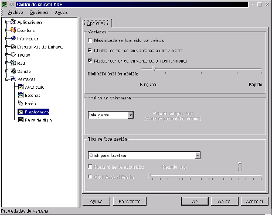

Next: Barra de título
Up: Personalización del comportamiento de
Previous: Botones
Índice General
Figura 3.15:
Movimiento y colocación de ventanas en el escritorio
|

|
El cuadro superior Ventanas (figura 3.15) posee las siguientes opciones:
- Maximizado vertical sólo por defecto
- Si esta opción es activada,
las ventanas se maximizarán solo verticalmente, manteniendo su ancho.
- Mostrar contenido en ventanas en movimiento
- Esta opción,
cuando está activada, hace que al mover una ventana, se vea todo el
contenido de la ventana en movimiento, si se posee una máquina no muy
potente, es aconsejable desactivar esta opción, así al mover una
ventana solo veremos el recuadro en movimiento.
- Mostrar contenido en ventanas al redimensionar
- Es la misma
funcionalidad que la opción anterior, pero cuando se redimensiona una
ventana.
El cuadro siguiente, Política de colocación, posee una lista
desplegable con las diferentes opciones de colocación automática o
manual de las ventanas que van abriéndose a medida que se ejecutan los
programas.
El cuadro inferior, Tipo de focalización, sirve para
seleccionar la forma en que las ventanas ``toman foco3.5''
Next: Barra de título
Up: Personalización del comportamiento de
Previous: Botones
Índice General
Proyecto Cursos - LuCAS - http://lucas.hispalinux.es/htmls/cursos.html